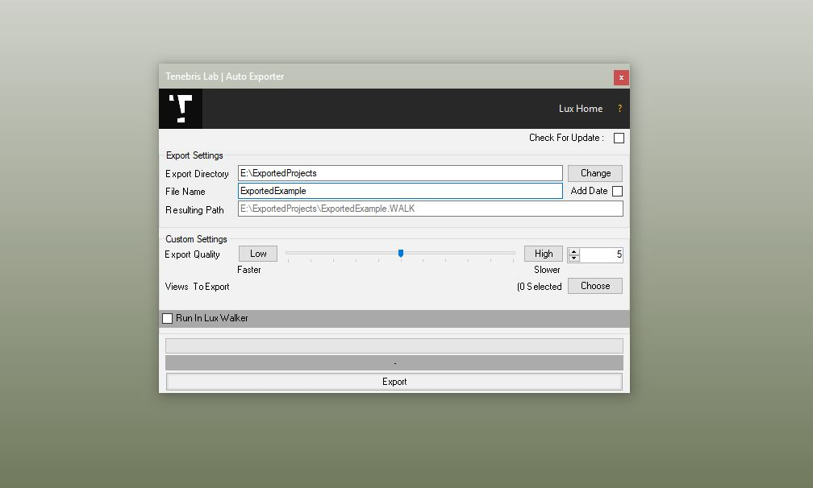

Exporting Steps¶
Open a project in Revit that you wish to export for VR Walkthrough.
Open The Default 3D View OR Choose an existing 3D View
Select the Add-Ins tab inside of Revit.
Click the Export Lux Walker button on the Tenebris Lab section.
Click Change to change the location of the export.
Type in the File Name for your project, then click Export to start the export process.
Open the .WALK file in LUX Walker by double clicking or selecting in LUX Walker.
Enjoy your WALK
Export Window Settings¶
Add Date:¶
Appends a date to your filename for easy versioning.
Export Quality¶
This limits the amount of geometry exported to LUX Walker. A value of 6 is generally good enough for VR. Higher values will mean LUX Walker will be slower. Optimize
Views to Export¶
This allows you to choose camera views to export to LUX Walker for quicker navigation in the Render tool.
Optimized Export¶
Optimizes your file. Might increase loading time, but greatly improves comfort in LUX Walker. Has been removed in newest exporter.
Versioning¶
Export a new file or use the “Add Date” export option to create versions of a project. Please note: You cannot use multi user walk through mode with different versions of a project.
Design Options¶
Create a new Master File. Link in Option 1 and Option 2. In LUX Walker use the layer tool to disable and enable design options.
Optimize¶
Note
LUX Walker can optimize your export by lowering the value in the Export Quality slider.
This reduces geometry count which in turn speeds up LUX Walker. It has some side effects such as reducing the edges of round objects making them appear more geometric in shape. If you absolutely need to see something at the highest detail, export a “section box” of only the items/room in question and increase the slider to the maximum value.
For Large projects we recommend exporting the whole project at 5 or below, then exporting section boxes of areas within the project at a higher quality.
This adds the benefit of limiting discussion around a specific part of a project and not getting lost in undeveloped areas.